Introducción
"Rick and Morty" es una serie animada que se sumerge en un universo de ciencia ficción, humor negro y aventuras interdimensionales. El núcleo de la historia sigue las peripecias de Rick Sanchez, un genio excéntrico y alcohólico que es también un científico capaz de viajar entre diferentes dimensiones y realidades. Acompañado por su nieto, Morty Smith, quien a menudo se ve arrastrado a peligrosas y absurdas situaciones, la serie explora temas profundos y filosóficos mientras se burla de la cultura pop y cuestiona la moralidad en un contexto caótico. A lo largo de las temporadas, los espectadores son testigos de una mezcla de humor subversivo, paradojas temporales, personajes extravagantes y críticas satíricas que hacen que la misma sea una experiencia única y, a menudo, provocadora. Esta serie se ha convertido en un fenómeno cultural, atrayendo a seguidores apasionados que aprecian su inteligencia y su capacidad para desafiar las convenciones de la animación televisiva tradicional.

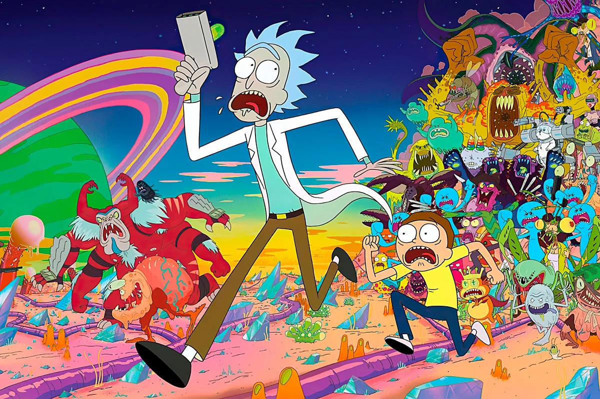
Galería de personajes principales
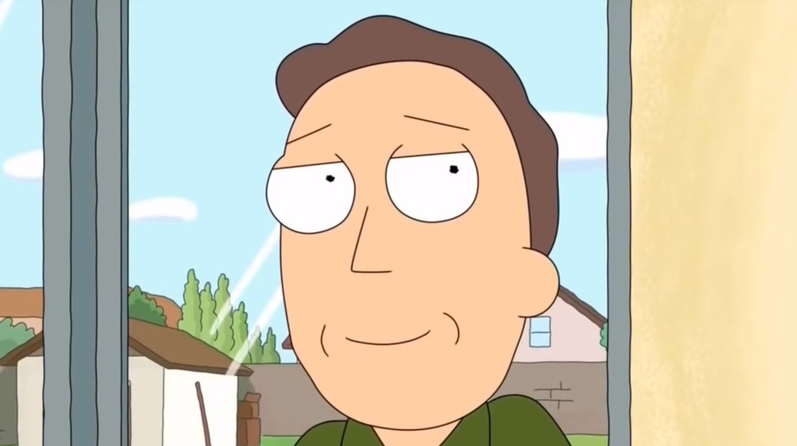
Jerry - Marido de Beth
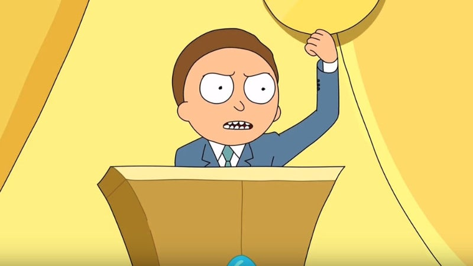
Morty - Socio de Rick
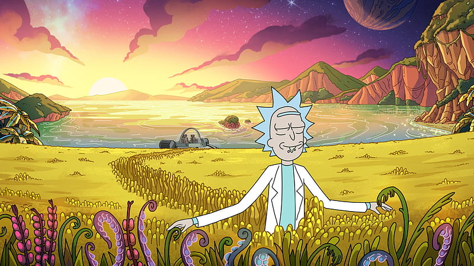
Rick - Abuelo de Beth
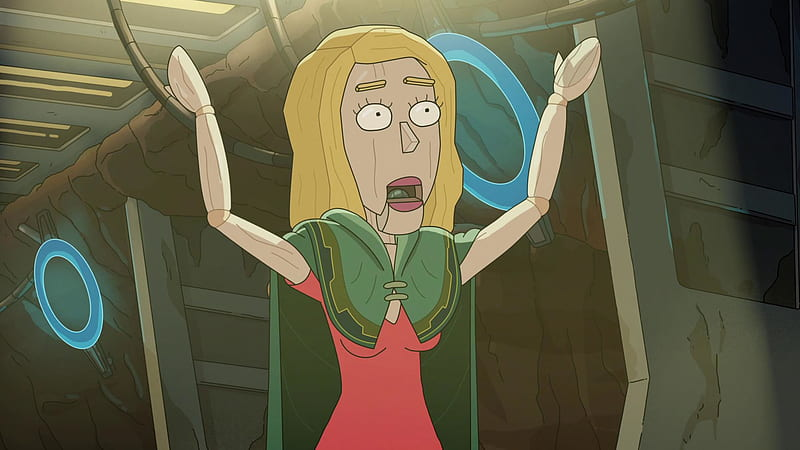
Beth - Mujer de Jerry
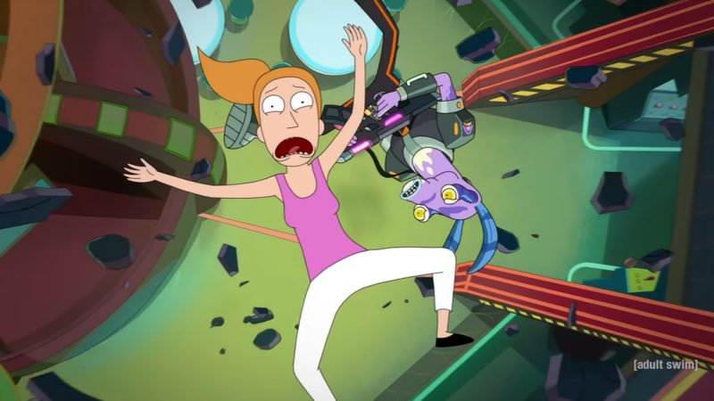
Summer - Hija de Jerry
Capítulos Destacados
-
Capítulo 3 - Temporada 3: "Pepinillo Rick"
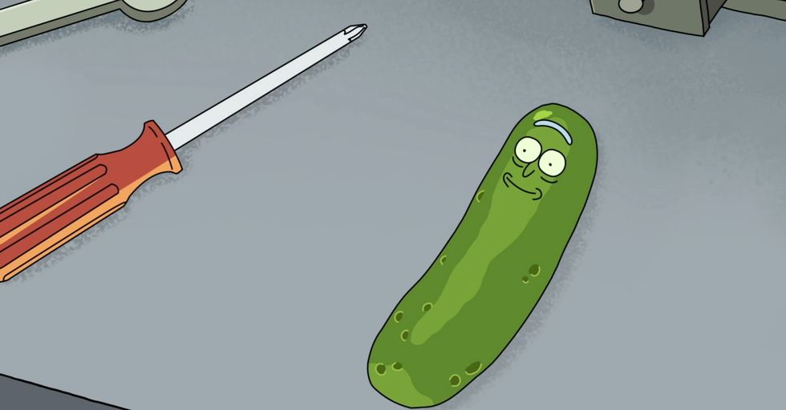
En este episodio, Rick se convierte en un pepinillo para evitar la terapia familiar, pero pronto se encuentra atrapado en una serie de situaciones peligrosas...
-
Capítulo 5 - Temporada 1: "Sr Meeseks"
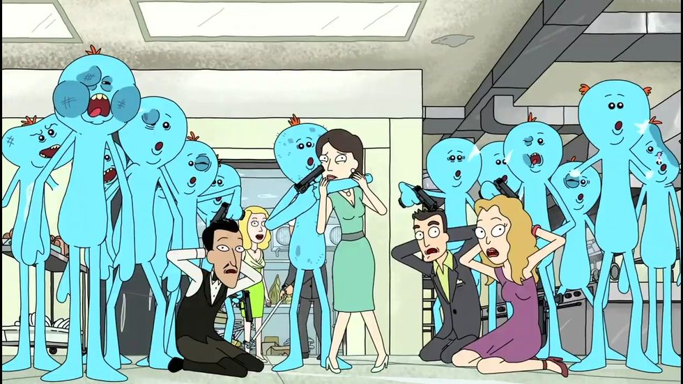
En este episodio, Rick introduce a la familia a los "Sr. Meeseeks", criaturas mágicas que existen solo para cumplir una tarea específica...
-
Capítulo 5 - Temporada 2: "Mírate y Aprende"
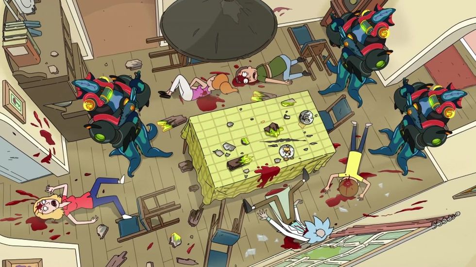
En este episodio, Rick y Morty se enfrentan a una amenaza extraterrestre que exige que la Tierra demuestre su valía a través de la música...
-
Capítulo 2 - Temporada 1: "Perro Cortacésped"
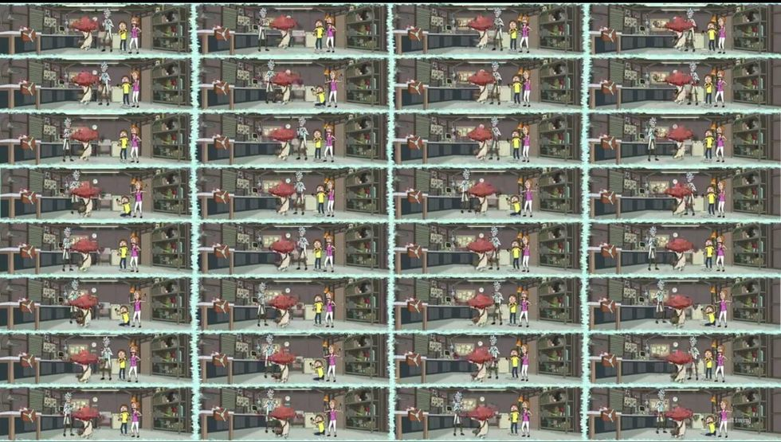
En este episodio, Rick crea un dispositivo que permite a Snuffles, el perro de la familia, ser más inteligente...
-
Capítulo 2 - Temporada 4: "El Viejo y el Asiento"
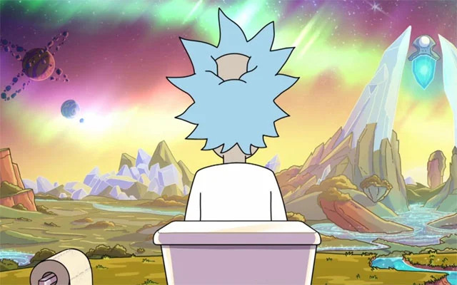
En este episodio, se centra en las aventuras de Rick cuando descubre que alguien ha estado utilizando su inodoro secreto...
Temporadas Destacadas
Temporada 1
La primera temporada de Rick and Morty se estrenó el 2 de diciembre de 2013...
Temporada 2
La segunda temporada de Rick and Morty se estrenó el 26 de julio de 2015...
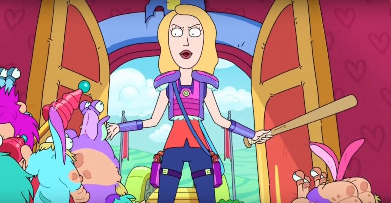
Temporada 3
La tercera temporada de Rick and Morty se estrenó el 30 de julio de 2017...
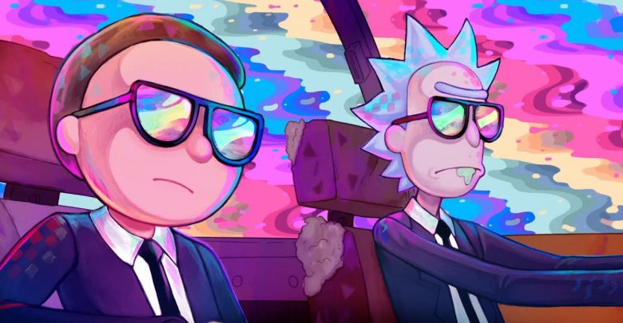
Temporada 6
La sexta temporada de Rick and Morty se estrenó el 20 de junio de 2022...